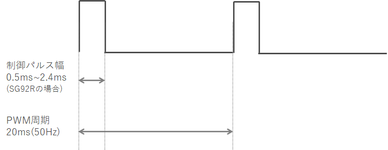
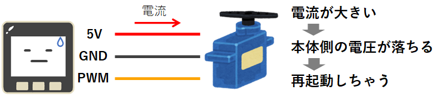
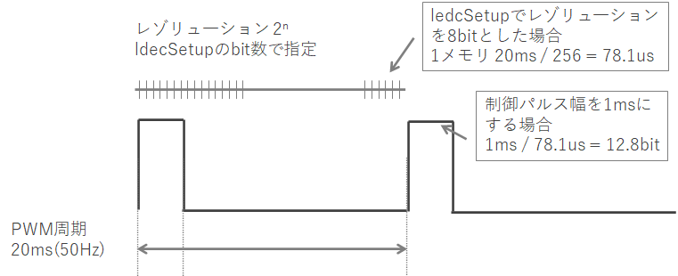

2022/08/01
M5Stack(ESP32)でサーボモータを使う
 ← M5Stackはこんなやつ。
← M5Stackはこんなやつ。
M5Stackでサーボモータを制御する方法をまとめました。
ESP32マイコンでサーボモータを使う場合も同様の手順で制御できます。
サーボモータにはPWMサーボと、シリアルサーボがあります。
- PWMサーボ： PWM信号を送るだけで回転量を制御できるのでお手軽
- シリアルサーボ： 通信によって回転命令だけでなく状態などを取得可能、通信バス上に複数台のサーボを繋げられるのでサーボ数が多い場合に便利
本記事ではPWMサーボの制御について説明しています。
サーボモータの制御方法
以降で3通りの方法を紹介します。
- ESP32マイコンのLED Control機能でPWM信号を生成する
- ESP32Servoライブラリを使用する
- ServoEasingライブラリを使用する
M5Stackからサーボモータへ出力するPWM信号は下記のようになります。
制御パルスの幅で回転角を指定します。
（周波数50Hz、パルス幅0.5ms～2.5ms辺りで制御することが多いようです。）

使うサーボモータによって制御パルス幅の仕様が違いますので、データシートなどで制御パルス幅をご確認ください。
※ 本記事では動作確認に「SG92R」というサーボモータを使用していて、制御パルス幅は0.5ms~2.4msになります
※ M5Stackからサーボモータへ電源を供給する場合、負荷によっては供給しきれずにM5Stackが再起動してしまう場合があります。
その場合は、外部から電源を持ってくる必要があります。

LED Control機能でPWM信号を生成する
M5StackにはESP32というマイコンが搭載されています。
このESP32に標準装備されている「LED Control」機能でPWMを生成できます。
ESP-IDF ProgramingGuide LED Control (LEDC)
arduinoでこの機能を使うには、LEDC関数を使用します。
arduino-esp32 esp32-hal-ledc.h
arduino-esp32 esp32-hal-ledc.c
ソースコードは以下になります。
// ledcSetup(uint8_t channel, uint32_t freq, uint8_t resolution_bits)
ledcSetup(0, 50, 8);
// ledcAttachPin(uint8_t pin, uint8_t channel)
ledcAttachPin(2, 0);
// ledcWrite(uint8_t channel, uint32_t duty)
ledcWrite(0, 13); // 制御パルス1ms
ledcSetup
- channel： PWMの制御チャンネルを指定します。0~15のどれかを選びます。
- freq： PWM信号の周波数を指定します。
- resolution_bits： PWM信号の1周期のレゾリュ―ションをbit数で指定します。
また、このbit数でfreqで指定可能な最大周波数が制限され、1/{(1/80/10^6)[s] * 2^n[bit]} [Hz]となります。
※80: ESP32ペリフェラル動作クロック80MHz、n： resolution_bitsの値、n=8のときのPWMの最大周波数は312,500Hz
ledcAttachPin
- pin： PWM信号を出力するピンを指定します。
- channel： ledcSetupで指定したチャンネルとします。
ledcWrite
- channel： ledcSetupで指定したチャンネルとします。
- duty： 制御パルス幅を、ledcSetupで指定したresolution_bitsのbit数で指定します。
50Hz、8bitで1ms幅とするには 1[ms] / {(1/50*1000)[ms] / 2^8[bit]} = 13[bit] となります。

ESP32Servoライブラリを使う
上記のLEDC関数は、制御パルス幅を周波数とレゾリュ―ションbitから計算する必要があり、ひと手間かかります。
これを簡単にしてくれるのがESP32Servoライブラリです。
setPeriodHertz ⇒ attach ⇒ write で、角度を指定して制御ができます。
だいぶらくちんですね。
ちなみに、ライブラリの中身を見てみるとLEDC関数を使ってPWM制御しています。
#include <ESP32Servo.h>
Servo servo1;
// setPeriodHertz(int hertz)
servo1.setPeriodHertz(50);
// attach(int pin, int min, int max)
servo1.attach(2, 500, 2400);
// write(int value)
servo1.write(90);
setPeriodHertz
- hertz： PWM信号の周波数を指定します。
attach
- pin： PWM信号を出力するピンを指定します。
- min： 制御パルス幅の最小値を[us]で指定します。
- max： 制御パルス幅の最大値を[us]で指定します。
write
- value： 回転角を[°]で指定します。
ServoEasingライブラリを使う
方法1と2では、サーボの回転角の指定はできますが、動かし方（回転速度の設定、最初と最後はゆっくり、など）の制御まではできませんでした。
ServoEasingライブラリを使用すると、細かな動作の制御までできるようになります。
注意：ServoEasingは内部でESP32Servoライブラリを使用しているので、ダウンロードしておく必要があります。
#include <ServoEasing.hpp>
ServoEasing servo1;
// attach(int aPin, int aInitialDegreeOrMicrosecond, int aMicrosecondsForServo0Degree, int aMicrosecondsForServo180Degree)
servo1.attach(G5, 90, 500, 2400);
// setEasingType(uint_fast8_t aEasingType)
servo1.setEasingType(EASE_QUADRATIC_IN_OUT);
// setEaseToD(int aTargetDegreeOrMicrosecond, uint_fast16_t aMillisForMove)
servo1.setEaseToD(90, 500);
// synchronizeAllServosStartAndWaitForAllServosToStop()
synchronizeAllServosStartAndWaitForAllServosToStop();
attach
- aPin： PWM信号を出力するピンを指定します。
- aInitialDegreeOrMicrosecond： 初期位置を角度[°]で指定します。
- aMicrosecondsForServo0Degree： 制御パルス幅の最小値を[us]で指定します。
- aMicrosecondsForServo180Degree： 制御パルス幅の最大値を[us]で指定します。
setEasingType
- aEasingType： サーボの回転動作のタイプを指定します。タイプは下記から選びます。
ServoEasing.h
タイプの説明は以下が参考になります。
Easing functions
setEaseToD
- aTargetDegreeOrMicrosecond： 回転角を[°]で指定します。
- aMillisForMove： 動作にかける時間を[ms]で指定します。
synchronizeAllServosStartAndWaitForAllServosToStop
- サーボの動作が終わるまで待ちます。
他にも機能がたくさんあるのですが、ドキュメントがないのでソースを見て、良さそうな関数があれば使ってみてください。
サーボモータの紹介
この記事では、SG92Rというサーボモータを使用しています。
値段がお手頃で使いやすいです。
秋葉原へ行けるのであれば、秋月電子でも購入できます。
また、他のサーボについては、以下のサイトが長所・短所がまとまっておりお勧めです。
ｽﾀｯｸﾁｬﾝ M5GoBottom版で試したPWMサーボ（SG90系）
以上です。